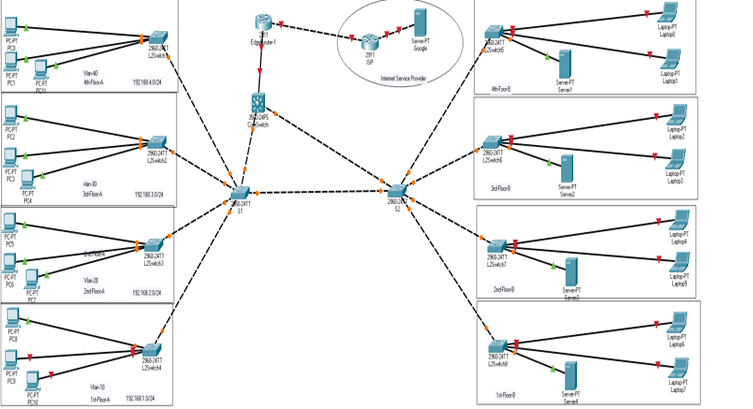

The design is a high-level network lan architecture of a Four floor consist of 6 rooms having 6 users at each room. Room 5 consist of Network equipment where commlink are landing from ISP.
The design consists of three tier architecture fulfilling the networking standard requirements.
The core and distribution network hardware is located at room 5 enclosed in a 22U Rack and the access switches are located at three places. One switch consisting of 12 port is located at room 6 enclosed in a 2U small rack hanged on a wall. The other 12 port switch is located at room 4.
One 24 port access switch is located at room 2 which is holding the traffic of users from 3 rooms (1,2 and room 3).
The network is highly redundant. From each access switch there are two fibre cables uplink to both the distribution switch so if one uplink fails then the traffic is automatically forwarded from the active healthy link. At the distribution there are two distribution switches working as a High availability cluster so if ne distribution switch fails or one uplink fails then all the traffic forward from another distribution switch both distribution switches are connected via EtherChannel as well. The core layer is also providing the redundancy and each router is dedicated for single WAN link so if one WAN fails all the traffic goes from another router
All the switch models and routing devices are deployed after keeping in a scalability view so for the scalability purpose the distribution and core equipment is used in an Active/Active mode to achieve the maximum throughput and doubled the switching and forwarding capacities. All the switches have at least 6 extra ports to connect some more users if there is any to maintain and tune with the provided IT budget
WDM network is designed to connect the branch (remote site) with the main premises located at different cities. The secondary site is located in city 1 and the premises is located at city 4. There are total 5 cities creating a DWDM long haul fibre ring cables.
The previously designed lan has one comm link connected with this network. The fibre coming from router 1 is directly connected to the ISP Nexus N7k Switch this switch send the site traffic to Multiplexer. Multiplexer have 8 channels of 40 Gigs [3]. Each fibre channel carrying specific type of traffic but in our diagram the traffic routes via Domestic private leased line. Multiplexer filter and send the traffic via single channel. When the traffic leaves the site it passes through OAM (Optical Line Amplifier) which amplifies the signal and transmit to the OADM (Optical Add/drop multiplexer) of Next city [4]. The OADM forwards the traffic to next amplifier to get the transmission signal gain and also transmit the needed amount of signal to its local premises.
From passing through multiple cities when the signal reach at Main premises it entered into the DEMUX(Demultiplexer) which separate the signal into their original state. After the signal transformation it passes out from DEMUX and transmit to the Nexus N7k switch via DPLC.
The designed network is highly redundant. If any of the link goes down or any of the site (local city site) goes down all of the traffic pass through the second channel. For example, in the above diagram if city 2 goes down all the traffic pass via city 5. So, it comprises on high availability network [5].
Hybrid Topology design is a combination of two are more different Network Architecture. Hybrid Topology is combination of All other topology design like Star Topology, Mesh Topology, Bus Topology, Ring Topology.
I Design this topology on bases of Hybrid Topology Design. Its LAN is Based on Ring Topology Design because all Switch or connected in Mesh Structure having high redundancy it has a multipurpose to configure it on Mesh, when one device is down then traffic are shifted to another device and reached to its destination point. and End Side I use Star Structure Because All user relates to switch. Communication will be done always but in case when Hub Devices goes down then communication will be interrupted. On WAN side I use Point to Point Dedicated Link and having using Static Public IP. Because Static IP are always static and have never change. We use static IP to Configure IP Tunnels (VPN) as well as NAT/PAT. That’s why I use hybrid Topology Structure they have multiple features to make network secure, Redundant as well as reliable.